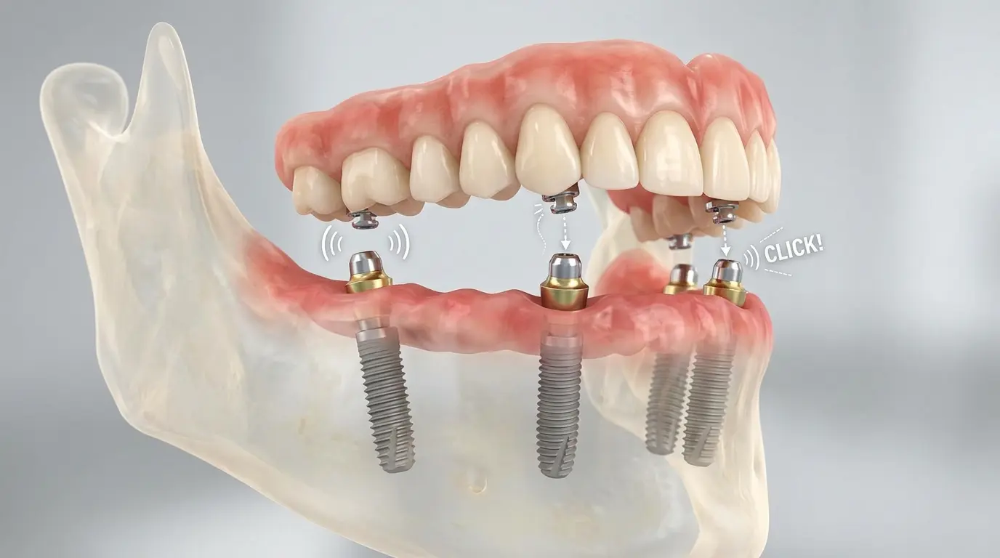

שיניים תותבות על שתלים: הפתרון היעיל לתותבת רופפת
השורה התחתונה:
- תותבות תחתונות שלמות לרוב נוטות לפול עקב חוסר בוואקום בלסת התחתונה ותנועת הלשון.
- שתלים דנטליים בודדים (2-4 לרוב) יכולים לשמש כעוגן שעליו התותבת ננעלת ב"קליק".
- הפתרון מאפשר כוח לעיסה גדול משמעותית, מונע מבוכה ומשפר את הביטחון העצמי.
רבים ממרכיבי התותבות המלאות מכירים את התופעה המתסכלת: התותבת העליונה בדרך כלל יושבת מצוין בזכות הוואקום עם החיך, אך התותבת התחתונה זזה, רוקדת, ולעיתים אף קופצת החוצה בזמן דיבור ואוכל. הפתרון המתקדם ביותר לכך כיום הוא שיניים תותבות על שתלים (תותבות נתמכות שתלים או תותבות מתקליקות).
איך זה עובד?
במקום שהתותבת תשב רק על גבי החניכיים, רופא השיניים מחדיר מספר קטן של שתלים דנטליים לעצם הלסת (לרוב מספיקים 2 עד 4 שתלים בלסת התחתונה). לאחר תקופת קליטה, מחברים לשתלים אלו תפסנים (מעין כפתורים). בתותבת עצמה מטמיעים "כיפות" תואמות. כאשר מרכיבים את התותבת לפה, הכפתורים מתחברים לכיפות ב"קליק" המעגן את התותבת בצורה חזקה ביותר.
היתרונות העצומים
- יציבות מקסימלית: התותבת אינה זזה גם בזמן אכילת מזון קשה כמו תפוחים או בשר, ואין צורך יותר להתעסק עם דבק תותבות.
- שמירה על העצם: השתלים שבעצם מעודדים אותה להישאר חזקה ומונעים את ספיגת העצם המהירה שמתרחשת כשלובשים תותבות רגילות.
- איכות חיים ודיבור: התותבת הקבועה לא משמיעה "קליקים" של פלסטיק בזמן דיבור ומונעת מצבי מבוכה חברתית.
- קלה לניקוי: מכיוון שמדובר בתותבת נשלפת, עדיין ניתן (וחובה) להוציא אותה בלילה ולצחצח את השתלים עצמם בקלות וביעילות.
האם טיפול זה ניתן לביצוע בבית?
החדרת שתלים היא פעולה כירורגית המבוצעת במרפאה סטרילית בלבד. עם זאת, אם כבר יש לכם שתלים בפה, את כל תהליך המדידות, ייצור התותבת עצמה והתאמתה לשתלים ניתן בהחלט לבצע במסגרת ביקורי בית על ידי רופא מוסמך המצויד כהלכה. אנו משתפים פעולה עם מומחים להשתלות במידת הצורך ויכולים לדאוג להתאמת התותבת הסופית בביתכם.
נמאס לכם מהתותבת שנופלת?
צרו קשר לייעוץ וקבלו את כל הפרטים על פתרונות קיבוע תותבות שישפרו את איכות חייכם ללא היכר.
צרו קשר לייעוץ אישי